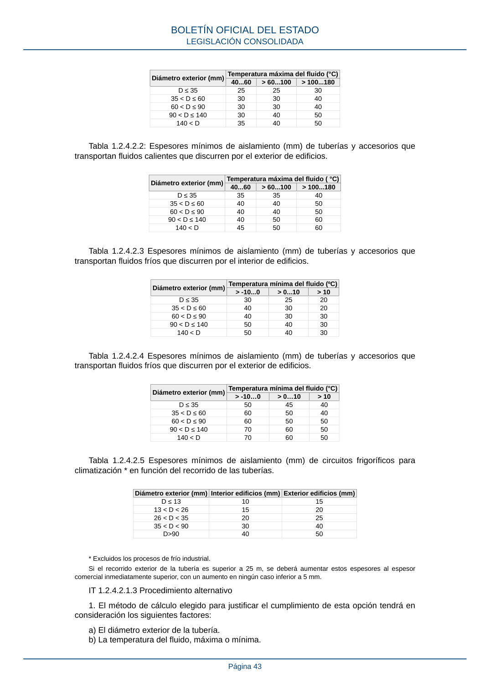

RITE · Fragmento de PDF p36 · versión 2022-08-02 · capa asociada
Formatos: JSON compacto · Markdown · PDF fuente
Ámbito del documento · texto del ámbito · documento y tablas
ID técnico a0106 · PDF pág. 36-43 · jerarquía no validada por persona · no es capítulo: sin_linea_de_encabezado · padre: raíz · literal original en el contenido: «artículo 15.1, apartado a), la justificación anterior incluirá la comparación del sistema de producción de energía elegido con otros alternativos.»
artículo 15.1, apartado a), la justificación anterior incluirá la comparación del sistema de producción de energía elegido con otros alternativos. producción de energía elegido con otros alternativos. En este análisis se deberán considerar y tener en cuenta aquellos sistemas que sean viables técnica, medioambiental y económicamente, en función del clima y de las características específicas del edificio y su entorno, como: a) Sistemas de producción de energía, basados en energías renovables. b) La cogeneración, en los edificios de servicios en los que se prevea una actividad ocupacional y funcional superior a las 4.000 horas al año, y cuya previsión de consumo energético tenga una relación estable entre la energía térmica (calor y frío) y la energía eléctrica consumida a lo largo de todo el periodo de ocupación. c) La conexión a una red de calefacción o refrigeración urbana cuando esta exista previamente. d) La calefacción y refrigeración centralizada. e) Las bombas de calor. f) Las instalaciones de climatización y agua caliente sanitaria pasivas. 7. Los resultados de la evaluación de la eficiencia energética general según la IT 1.2.4.8 se han de incluir en el proyecto o memoria técnica y se facilitarán al propietario del edificio. 8. Cuando se deban comparar sistemas alternativos de producción frigorífica, es aceptable el cálculo del impacto total de calentamiento equivalente (TEWI), de acuerdo al método propuesto en el Anexo B de la parte 1 de la norma UNE-EN 378. IT 1.2.4 Caracterización y cuantificación de la exigencia de eficiencia energética. IT 1.2.4.1 Generación de calor y frío. IT 1.2.4.1.1 Criterios generales. BOLETÍN OFICIAL DEL ESTADO LEGISLACIÓN CONSOLIDADA Página 36 1. Los equipos de generación térmica cumplirán los requisitos establecidos en los reglamentos europeos de diseño ecológico vigentes que les sean de aplicación. Estos requisitos afectan a los siguientes equipos de generación de calor y frío: a) Acondicionadores de aire. b) Aparatos de calefacción, calefactores combinados, equipos combinados de aparato de calefacción, control de temperatura y dispositivo solar y equipos combinados de calefactor combinado, control de temperatura y dispositivo solar. c) Calentadores de agua, depósitos de agua caliente y equipos combinados de calentador de agua y dispositivo solar. d) Aparatos de calefacción local, aparatos de calefacción local de combustible sólido y calderas de combustible sólido. e) Productos de calentamiento de aire, productos de refrigeración y las enfriadoras de procesos de alta temperatura. Asimismo, cualquier equipo de generación y calor y frío no incluido entre los anteriores y cuyos reglamentos específicos de diseño ecológico se desarrollen con posterioridad a la entrada en vigor de este reglamento han de cumplir con los requisitos establecidos a nivel europeo. Los equipos de potencias superiores a las máximas establecidas en cada reglamento, cumplirán al menos los requisitos de eficiencia energética correspondientes a las máximas potencias reglamentadas. En el proyecto o memoria técnica se indicarán las prestaciones energéticas de los equipos de generación de calor y frío seleccionados, en el rango de potencias en las que van a trabajar en la instalación. En aquellos casos en que los equipos dispongan de etiquetado energético se indicará su clase. 2. La potencia que suministren las unidades de producción de calor o frío se ajustará a la demanda máxima simultánea de las instalaciones servidas, considerando las ganancias o pérdidas de calor a través de las redes de tuberías de los fluidos portadores, así como el equivalente térmico de la potencia absorbida por los equipos de transporte de los fluidos. 3. Con objeto de mejorar la eficiencia energética de los generadores, ajustar la potencia a la demanda térmica real y reducir la potencia de diseño en proyecto, para fijar la potencia que suministren las unidades de producción de calor o frío se ha de tener en cuenta: a) Para el cálculo de las cargas térmicas máximas de invierno, las temperaturas secas a considerar son las correspondientes a un percentil del 99 % para todos los tipos de edificios y espacios acondicionados (TS 99 %). b) Para el cálculo de las cargas térmicas máximas de verano, las temperaturas seca y húmeda coincidente a considerar son las correspondientes a un percentil del 1 % para todos los tipos de edificios y espacios acondicionados (TS 1 %). Como excepción y siempre que se justifique en el proyecto o memoria técnica, para edificios con usos especiales, como hospitales, museos, etc. se ha de tener en cuenta: a) Para el cálculo de las cargas térmicas máximas de invierno, las temperaturas secas a considerar son las correspondientes a un percentil del 99,6 % (TS 99,6 %). b) Para el cálculo de las cargas térmicas máximas de verano, las temperaturas seca y húmeda coincidente a considerar son las correspondientes a un percentil del 0,4 % (TS 0,4 %). 4. En el procedimiento de análisis se estudiarán las distintas demandas al variar la hora del día y el mes del año, para hallar la demanda máxima simultánea, así como las demandas parciales y la mínima, con el fin de facilitar la selección del tipo y número de generadores. 5. Los generadores centrales se conectarán hidráulicamente en paralelo y se deben poder independizar entre sí. En casos excepcionales, que deben justificarse, los generadores de agua refrigerada podrán conectarse hidráulicamente en serie. 6. El caudal del fluido portador en los generadores podrá variar para adaptarse a la carga térmica instantánea, entre los límites mínimo y máximo establecidos por el fabricante. BOLETÍN OFICIAL DEL ESTADO LEGISLACIÓN CONSOLIDADA Página 37 7. Cuando se interrumpa el funcionamiento de un generador, deberá interrumpirse también el funcionamiento de los equipos accesorios directamente relacionados con el mismo, salvo aquellos que, por razones de seguridad o explotación, lo requiriesen. 8. Los equipos que formen parte de la interconexión del edificio con redes urbanas de calefacción o refrigeración tendrán la consideración de generadores de calor o frío según les corresponda. La potencia a considerar a tales efectos será la potencia del sistema de intercambio de calor y frío respectivamente. 9. Las temperaturas de generación deberán aumentarse en refrigeración y disminuirse en calefacción, cuando las demandas sean inferiores a las de diseño (medidas por demanda o por temperatura exterior). IT 1.2.4.1.2 Generación de calor IT 1.2.4.1.2.1 Requisitos mínimos de rendimientos energéticos de los generadores de calor. 1. Los requisitos mínimos serán los establecidos según el apartado 1 de la IT 1.2.4.1.1 Criterios generales. En el proyecto o memoria técnica se indicarán las prestaciones energéticas de los generadores de calor. Además, deberá indicarse la información que aparece en la ficha de producto, exigida por los reglamentos de etiquetado energético que apliquen a cada tipo de generador de calor. 2. Quedan excluidos de cumplir con los requisitos mínimos del punto 1 las calderas y aparatos de calefacción local alimentadas por combustibles cuya naturaleza corresponda a recuperaciones de efluentes, subproductos o residuos, biomasa no leñosa, gases residuales, y siempre que las emisiones producidas por los gases de combustión cumplan la normativa ambiental aplicable. En el caso de que se utilice como combustible huesos de aceituna o cáscaras de frutos secos, el rendimiento mínimo exigido será del 80 % a plena carga, salvo para aparatos de calefacción local cerrados y cocinas, que será del 65 %. En estos casos, solo se deberá indicar el rendimiento instantáneo de la caldera o aparato de calefacción local para el 100 por ciento de la potencia útil nominal, para uno de los biocombustibles sólidos anteriores que se prevé se utilizará en su alimentación o, en su caso, la mezcla de biocombustibles. Solo se podrán usar esos materiales (huesos de aceituna o cáscaras) u otros similares de la industria agroalimentaria si proceden de tratamientos mecánicos en dicha industria que no alteren su composición y si la combustión se lleva a cabo mediante métodos que no dañen la salud humana y el medio ambiente. 3. Queda prohibida la instalación de calderas y calentadores a gas, en ambos casos de hasta 70 kW y de tipo B de acuerdo con las definiciones dadas en la norma UNE-EN 1749:2021, salvo si se sitúan en locales que cumplen los requisitos establecidos para las salas de máquinas, o en el caso de calentadores si se sitúan en una zona exterior definida de acuerdo con la norma UNE 60670-6:2014. Esta prohibición no afecta a los aparatos tipo B3x. 4. El control del sistema se basará en sonda exterior de compensación de temperatura o termostato modulante, de forma que modifique la temperatura de ida a emisores adaptándolos a la demanda. 5. Los emisores de calefacción deberán estar calculados para una temperatura máxima de entrada al emisor de 60 ºC. 6. Las bombas de calor deberán cumplir, además, los siguientes requisitos: a) La temperatura del agua a la salida de las plantas deberá ser mantenida constante al variar la carga, salvo excepciones que se justificarán. b) Se procurará que la potencia máxima en los equipos se obtenga con el salto máximo de temperaturas de entrada y salida establecido por el fabricante, de modo que el caudal del fluido caloportador sea mínimo para dicha potencia máxima. Esta situación se puede mantener en carga parcial si se disponen de bombas de caudal variable que permitan regular el caudal para el salto térmico. IT 1.2.4.1.2.2 Fraccionamiento de potencia. BOLETÍN OFICIAL DEL ESTADO LEGISLACIÓN CONSOLIDADA Página 38 1. Se dispondrán los generadores necesarios en número, potencia y tipos adecuados, según el perfil de la carga térmica prevista. 2. Las centrales de producción de calor equipadas con generadores que utilicen combustible líquido o gaseoso, cumplirán con estos requisitos: a) Si la potencia útil nominal a instalar es mayor que 400 kW se instalarán dos o más generadores. b) Si la potencia útil nominal a instalar es igual o menor que 400 kW y la instalación suministra servicio de calefacción y de agua caliente sanitaria, se podrá emplear un único generador siempre que la potencia demandada por el servicio de agua caliente sanitaria sea igual o mayor que la del escalón de potencia mínimo. 3. Se podrán adoptar soluciones distintas a las establecidas en el apartado 2 de esta IT, siempre que se justifique técnicamente que la solución propuesta es al menos equivalente desde el punto de vista de la eficiencia energética y de acuerdo con lo establecido en el apartado 2.b) del artículo 14 de este reglamento. En las reformas el número de calderas puede estar limitado por el espacio disponible en cuyo caso se seleccionarán los equipos que mejor se adecuen a las diferentes demandas, por ejemplo calderas de condensación con quemadores modulantes, etc. 4. Quedan excluidos de cumplir con los requisitos establecidos en el apartado 2 de esta IT, los generadores de calor alimentados por combustibles cuya naturaleza corresponda a recuperaciones de efluentes, subproductos o residuos, como biomasa, gases residuales y cuya combustión no se vea afectada por limitaciones relativas al impacto ambiental. 5. Los generadores a gas de tipo modular se considerarán como un único generador, salvo cuando dispongan de un sistema automático que independice el circuito hidráulico, de tal forma que se consiga la parcialización del conjunto. 6. Las bombas de calor reversibles de expansión directa se considerarán como un generador único cuando consten de una sola unidad exterior y una o varias unidades interiores. 7. En el caso de enfriadoras/bombas de calor reversibles para producción de agua fría/ caliente, se considerará un generador único aquél que cumpla los dos requisitos siguientes; que conste de una sola acometida eléctrica y disponga de un evaporador no conectado hidráulicamente con ningún otro equipo de producción. IT 1.2.4.1.2.3 Regulación de quemadores La regulación de los quemadores alimentados por combustible gaseoso será siempre modulante. Para el caso de quemadores alimentados por combustibles líquidos con potencia igual o inferior a 70 kW, siempre que esté debidamente justificado en el proyecto o memoria técnica, la regulación podrá ser de una o dos marchas, debiendo ser modulantes para potencias superiores. IT 1.2.4.1.2.4 Preparación de agua caliente para usos sanitarios. 1. Para el dimensionamiento de las instalaciones de agua caliente sanitaria, se tendrá en cuenta lo establecido en: a) La sección HE4, así como cualquier otra sección o anejo del Documento Básico HE Ahorro de Energía del Código Técnico de la Edificación donde se regule la demanda de agua caliente sanitaria. b) La sección HS 4 Suministro de Agua del Código Técnico de la Edificación. c) La norma UNE-EN 12831-3. 2. Los calentadores y depósitos de agua caliente sanitaria cumplirán con los límites de eficiencia energética en % y de pérdidas máximas de los depósitos en kWh/año, establecidas en el reglamento de diseño ecológico aplicable o la normativa que lo sustituya. 3. En el caso de incorporación de sistemas de generación auxiliar convencional a los depósitos de acumulación de la instalación renovable, estos no deben suponer una disminución del aprovechamiento de los recursos renovables, hecho que deberá quedar justificado en el proyecto o memoria técnica en su caso según el apartado f) de la IT 1.2.3. BOLETÍN OFICIAL DEL ESTADO LEGISLACIÓN CONSOLIDADA Página 39 IT 1.2.4.1.3 Generación de frío IT 1.2.4.1.3.1 Requisitos mínimos de eficiencia energética de los generadores de frío. 1. Los requisitos mínimos serán los establecidos según el apartado 1 de la IT 1.2.4.1.1 Criterios generales. Se indicarán los coeficientes EER y COP individual de cada equipo al variar la demanda desde el máximo hasta el límite inferior de parcialización, en las condiciones previstas de diseño, así como el de la central con la estrategia de funcionamiento elegida. Además, deberá indicarse la información que aparece en la ficha de producto, exigida por los reglamentos de etiquetado energético que apliquen a cada tipo de generador de frío. 2. La temperatura del agua refrigerada a la salida de las plantas deberá ser mantenida constante al variar la demanda, salvo excepciones que se justificarán. 3. El salto de temperatura será una función creciente de la potencia del generador o generadores, hasta el límite establecido por el fabricante, con el fin de ahorrar potencia de bombeo, salvo excepciones que se justificarán. IT 1.2.4.1.3.2 Escalonamiento de potencia en centrales de generación de frío. 1. Las centrales de generación de frío deben diseñarse con un número de escalones tal que se cubra la variación de la demanda del sistema con una eficiencia próxima a la máxima que ofrecen los generadores elegidos. 2. La parcialización de la potencia suministrada deberá obtenerse preferiblemente con continuidad y para instalaciones de potencia útil nominal superior a 70 kW, como mínimo con 4 escalonamientos de la central siendo el mínimo como máximo del 25 %. Para instalaciones con potencias inferiores la parcialización de la potencia suministrada deberá obtenerse, como mínimo, escalonadamente. Quedan excluidas de estos requerimientos las centrales de generación con máquinas geotérmicas, salvo las que tengan una potencia útil nominal superior a 70 kW, que deberán tener al menos 2 escalones de potencia. 3. Para instalaciones de potencia útil nominal superior a 70 kW, si el límite inferior de la demanda pudiese ser menor que el límite inferior de parcialización de una máquina, se debe instalar un sistema diseñado para cubrir esa demanda durante su tiempo de duración a lo largo de un día. El mismo sistema se empleará para limitar la punta de la demanda máxima diaria. 4. A este requisito están sometidos también los equipos frigoríficos reversibles cuando funcionen en régimen de bomba de calor. IT 1.2.4.1.3.3 Maquinaria frigorífica enfriada por aire 1. Los condensadores de la maquinaria frigorífica enfriada por aire se dimensionarán para una temperatura seca exterior igual a la del nivel percentil más exigente más 3 ºC. 2. La maquinaria frigorífica enfriada por aire estará dotada de un sistema de control de la presión de condensación, salvo cuando se tenga la seguridad de que nunca funcionará con temperaturas exteriores menores que el límite mínimo que indique el fabricante. 3. Cuando las máquinas sean reversibles, la temperatura mínima de diseño será la húmeda del nivel percentil más exigente menos 2 °C. IT 1.2.4.1.3.4 Maquinaria frigorífica enfriada por agua o condensador evaporativo 1. Las torres de refrigeración y los condensadores evaporativos se dimensionarán para el valor de la temperatura húmeda que corresponde al nivel percentil más exigente más 1 °C. 2. Se seleccionará el diferencial de acercamiento y el salto de temperatura del agua para optimizar el dimensionamiento de los equipos, considerando la incidencia de tales parámetros en el consumo energético del sistema. 3. Al disminuir la temperatura de bulbo húmedo y/o la carga térmica se hará disminuir el nivel térmico del agua de condensación hasta el valor mínimo recomendado por el fabricante del equipo frigorífico, variando la velocidad de rotación de los ventiladores, por escalones o con continuidad, o el número de los mismos en funcionamiento. 4. El agua del circuito de condensación se protegerá de manera adecuada contra las heladas. BOLETÍN OFICIAL DEL ESTADO LEGISLACIÓN CONSOLIDADA Página 40 5. Las torres de refrigeración y los condensadores evaporativos se seleccionarán con ventiladores de bajo consumo, preferentemente de tiro inducido. 6. Se recomienda diseñar un desacoplamiento hidráulico entre los equipos refrigeradores del agua de condensación y los condensadores de las máquinas frigoríficas. 7. Las torres de refrigeración y los condensadores evaporativos cumplirán con la legislación vigente higiénico-sanitaria para la prevención y control de la legionelosis. Complementariamente y siempre que no contradiga a la legislación vigente en la materia cumplirán con lo dispuesto en el apartado 6.5.1 de la norma UNE 100030, en lo que se refiere a la distancia a tomas de aire y ventanas. IT 1.2.4.2 Redes de tuberías y conductos. IT 1.2.4.2.1 Aislamiento térmico de redes de tuberías. IT 1.2.4.2.1.1 Generalidades. 1. Todas las tuberías y accesorios, así como equipos, aparatos y depósitos de las instalaciones térmicas dispondrán de un aislamiento térmico cuando contengan: a) fluidos refrigerados con temperatura menor que la temperatura del ambiente del local por el que discurran; b) fluidos con temperatura mayor que 40 ºC cuando estén instalados en locales no calefactados, entre los que se deben considerar pasillos, galerías, patinillos, aparcamientos, salas de máquinas, falsos techos y suelos técnicos, entendiendo excluidas las tuberías de torres de refrigeración y las tuberías de descarga de compresores frigoríficos, salvo cuando estén al alcance de las personas. 2. Cuando las tuberías o los equipos estén instalados en el exterior del edificio, la terminación final del aislamiento deberá poseer la protección suficiente contra la intemperie. En la realización de la estanquidad de las juntas se evitará el paso del agua de lluvia. 3. Los equipos y componentes y tuberías, que se suministren aislados de fábrica, deben cumplir con su normativa específica en materia de aislamiento o la que determine el fabricante. En particular, todas las superficies frías de los equipos frigoríficos estarán aisladas térmicamente con el espesor determinado por el fabricante. 4. Para evitar la congelación del agua en tuberías expuestas a temperaturas del aire menores que la de cambio de estado se podrá recurrir a estas técnicas: empleo de una mezcla de agua con anticongelante, circulación del fluido o aislamiento de la tubería calculado de acuerdo a la norma UNE-EN ISO 12241, apartado 6. También se podrá recurrir al calentamiento directo del fluido incluso mediante «traceado» de la tubería excepto en los subsistemas solares. 5. Para evitar condensaciones intersticiales se instalará una adecuada barrera al paso del vapor; la resistencia total será mayor que 50 MPa·m2·s/g. Se considera válido el cálculo realizado siguiendo el procedimiento indicado en el apartado 4.3 de la norma UNE-EN ISO 12241. 6. En toda instalación térmica por la que circulen fluidos no sujetos a cambio de estado, en general las que el fluido caloportador es agua, las pérdidas térmicas globales por el conjunto de conducciones no superarán el 4 % de la potencia máxima que transporta. 7. Para el cálculo del espesor mínimo de aislamiento se podrá optar por el procedimiento simplificado o por el alternativo. Para instalaciones de más de 70 kW debe utilizarse el método alternativo. En ningún caso el espesor mínimo debe ser menor al especificado en las tablas de la IT 1.2.4.2.1.2. IT 1.2.4.2.1.2 Procedimiento simplificado 1. En el procedimiento simplificado los espesores mínimos de aislamientos térmicos, expresados en mm, en función del diámetro exterior de la tubería sin aislar y de la temperatura del fluido en la red y para un material con conductividad térmica de referencia a 10 °C de 0,040 W/ (m.K) deben ser los indicados en las siguientes tablas 1.2.4.2.1 a 1.2.4.2.5. 2. Los espesores mínimos de aislamiento de equipos, aparatos y depósitos deben ser iguales o mayores que los indicados en las tablas anteriores para las tuberías de diámetro exterior mayor que 140 mm. BOLETÍN OFICIAL DEL ESTADO LEGISLACIÓN CONSOLIDADA Página 41 3. Los espesores mínimos de aislamiento de las redes de tuberías que tengan un funcionamiento continuo, como redes de agua caliente sanitaria, deben ser los indicados en las tablas anteriores aumentados en 5 mm, tal y como se refleja en la tabla 1.2.4.2. Tabla 1.2.4.2 Espesores mínimos de aislamiento (mm) de tuberías y accesorios que transportan ACS que discurren por el interior y el exterior de los edificios Diámetro exterior (mm)Aislamiento de tuberías para ACS Interior Exterior D ≤ 35 30 40 35 < D ≤ 60 35 45 60 < D ≤ 90 35 45 90 < D ≤ 140 45 55 140 < D 45 55 4. Los espesores mínimos de aislamiento de las redes de tuberías que conduzcan, alternativamente, fluidos calientes y fríos serán los obtenidos para las condiciones de trabajo más exigentes. 5. Los espesores mínimos de aislamiento de las redes de tuberías de retorno de agua serán los mismos que los de las redes de tuberías de impulsión. 6. Los espesores mínimos de aislamiento de los accesorios de la red, como válvulas, filtros, etc., serán los mismos que los de la tubería en que estén instalados. 7. El espesor mínimo de aislamiento de las tuberías de diámetro exterior menor o igual que 25 mm y de longitud menor que 10 m, contada a partir de la conexión a la red general de tuberías hasta la unidad terminal, y que estén empotradas en tabiques y suelos o instaladas en canaletas interiores, será de 10 mm, evitando, en cualquier caso, la formación de condensaciones. En las conexiones de equipos de refrigeración doméstico o equipos de energía solar, espacios reducidos de curvas y juntas se permitirá una reducción de 10 mm sobre los espesores mínimos. 8. Cuando se utilicen materiales de conductividad térmica distinta a λref = 0,04 W/(m·K) a 10 ºC, se considera válida la determinación del espesor mínimo aplicando las siguientes ecuaciones: para superficies planas: para superficies de sección circular: donde: λref: conductividad térmica de referencia, igual a 0,04 W/(m·K) a10 ºC. λ: conductividad térmica del material empleado, en W/(m·K) dref : espesor mínimo de referencia, en mm. d: espesor mínimo del material empleado, en mm. D: diámetro interior del material aislante, coincidente con el diámetro exterior de la tubería, en mm. ln: logaritmo neperiano (base 2,7183...). EXP: significa el número neperiano elevado a la expresión entre paréntesis. 9. En cualquier caso se evitará la formación de condensaciones superficiales e intersticiales en instalaciones de frío y redes de agua fría sanitaria. Tabla 1.2.4.2.1: Espesores mínimos de aislamiento (mm) de tuberías y accesorios que transportan fluidos calientes que discurren por el interior de edificios. BOLETÍN OFICIAL DEL ESTADO LEGISLACIÓN CONSOLIDADA Página 42 Diámetro exterior (mm)Temperatura máxima del fluido (°C) 40...60 > 60...100 > 100...180 D ≤ 35 25 25 30 35 < D ≤ 60 30 30 40 60 < D ≤ 90 30 30 40 90 < D ≤ 140 30 40 50 140 < D 35 40 50 Tabla 1.2.4.2.2: Espesores mínimos de aislamiento (mm) de tuberías y accesorios que transportan fluidos calientes que discurren por el exterior de edificios. Diámetro exterior (mm)Temperatura máxima del fluido ( °C) 40...60 > 60...100 > 100...180 D ≤ 35 35 35 40 35 < D ≤ 60 40 40 50 60 < D ≤ 90 40 40 50 90 < D ≤ 140 40 50 60 140 < D 45 50 60 Tabla 1.2.4.2.3 Espesores mínimos de aislamiento (mm) de tuberías y accesorios que transportan fluidos fríos que discurren por el interior de edificios. Diámetro exterior (mm)Temperatura mínima del fluido (ºC) > -10...0 > 0...10 > 10 D ≤ 35 30 25 20 35 < D ≤ 60 40 30 20 60 < D ≤ 90 40 30 30 90 < D ≤ 140 50 40 30 140 < D 50 40 30 Tabla 1.2.4.2.4 Espesores mínimos de aislamiento (mm) de tuberías y accesorios que transportan fluidos fríos que discurren por el exterior de edificios. Diámetro exterior (mm)Temperatura mínima del fluido (°C) > -10…0 > 0…10 > 10 D ≤ 35 50 45 40 35 < D ≤ 60 60 50 40 60 < D ≤ 90 60 50 50 90 < D ≤ 140 70 60 50 140 < D 70 60 50 Tabla 1.2.4.2.5 Espesores mínimos de aislamiento (mm) de circuitos frigoríficos para climatización * en función del recorrido de las tuberías. Diámetro exterior (mm)Interior edificios (mm)Exterior edificios (mm) D ≤ 13 10 15 13 < D < 26 15 20 26 < D < 35 20 25 35 < D < 90 30 40 D>90 40 50 * Excluidos los procesos de frío industrial. Si el recorrido exterior de la tubería es superior a 25 m, se deberá aumentar estos espesores al espesor comercial inmediatamente superior, con un aumento en ningún caso inferior a 5 mm. IT 1.2.4.2.1.3 Procedimiento alternativo

PDF fuente redistribuible: copia fiel enlazada en esta página (SHA256 verificado).